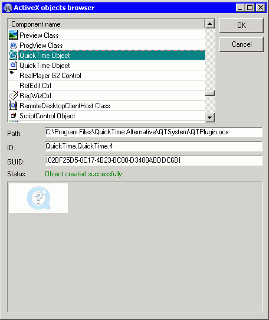

Warning! Save you form before trying to choose objects! Though Koda will try to handle errors caused by ActiveX components, this realm is in many cases unpredictable, and some components can freeze or crash Koda, and so it will be too late to save your work.

 ActiveX objects browser can take some time when opening for scanning your registry for installed components that have IDispatch interface and can be embedded into GUI.
ActiveX objects browser can take some time when opening for scanning your registry for installed components that have IDispatch interface and can be embedded into GUI.
When you select a component in the list, its path, ID, and GUID are shown just below the list. Koda, at once, will try to create this object in preview area. You must check status line to see if object was created successfully or not.